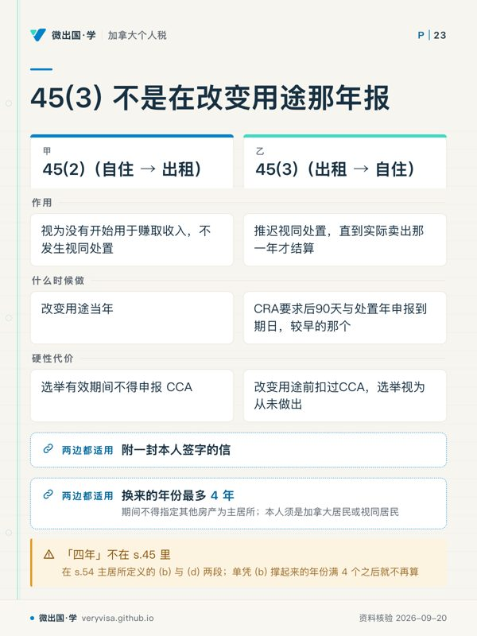
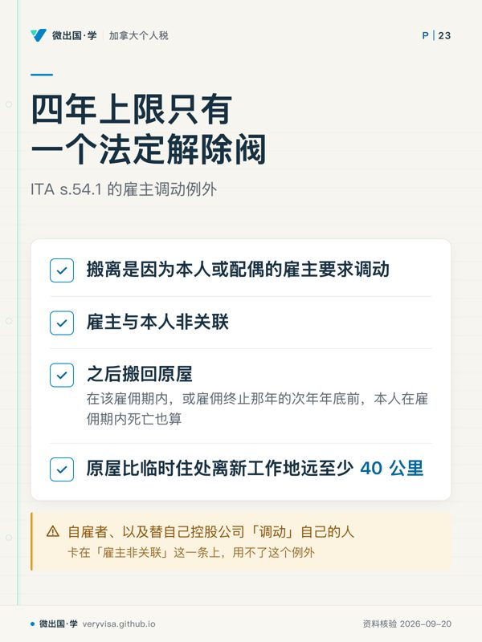

🃏 Flashcards · 3 闪卡 · 3 张 🖼 Slides · 4 幻灯 · 4 页 ✍️ Questions · 7 刷题 · 7 道
房产：出租与主居所 Real property P2 稳住 P2 Hold steady
ZH EN ZH + EN
先看这一章怎么考 First, how this chapter is tested
公式代入与免税年数计算题：考查主居所免税公式 A − (A × B / C) − D 的要素拆解，重点测试 plus one 规则的居民前提、家庭每年限一套的年份重叠取舍，以及未满足全期自住时的应税资本利得计算。 Substituting into the formula and counting exempt years: tests the elements of the principal residence exemption formula A - (A x B / C) - D, in particular the residency precondition for the plus one rule, the choice of which overlapping years to designate given one property per family per year, and the taxable capital gain when the home was not a principal residence for the whole period. 用途改变与选举定性题：考查自住与出租相互转换时的视同处置（s.45(1)），重点测试 45(2) 与 45(3) 选举的申报时间节点、四年上限（及 s.54.1 雇主调动例外）、以及申报折旧（CCA）对 45(3) 资格的致命破坏。 Change in use and the nature of the elections: tests the deemed disposition (s.45(1)) when a home moves between personal use and rental, in particular the filing time points for the 45(2) and 45(3) elections, the four-year cap (and the s.54.1 employer relocation exception), and how claiming CCA fatally undermines eligibility for a 45(3) election. 部分出租与视同处置豁免判断题：考查自住房部分出租时是否维持整套免税的 CRA 三要件（附属性、无结构改造、未计提 CCA），测试混淆折旧抵税与丧失主居所资格的取舍判断。 Partial rental and the deemed disposition exemption: tests CRA's three conditions (ancillary use, no structural change, no CCA claimed) for keeping the whole home exempt when part of it is rented, and the trade-off between claiming depreciation for tax savings and losing principal residence status. 最常丢分的陷阱（看到题干信号就警觉） Traps that cost the most marks (watch for the signal in the stem)
误认自住房不报也能免税 Thinking a home lived in is exempt without reporting 题干出现“全程自住出售但纳税人未在当年税表提及”、“咨询是否可以不填报”或考查迟报罚款金额。 The question has "sold after living in it the whole time but the taxpayer did not mention it on the return", asks "whether it can be left unreported", or tests the amount of the late-filing penalty. 出租期间计提折旧破坏 45(3) 选举 Claiming CCA during the rental period breaks the 45(3) election 题干出现“在出租期间申报过资本成本折旧 (CCA)”、“随后搬回自住希望做 45(3) 选举”或询问递延有效性。 The question has "claimed capital cost allowance (CCA) during the rental period", "later moved back to live in it and wants to make a 45(3) election", or asks whether the deferral is valid. 将 45(3) 选举期限简单记为卖房年 Remembering the 45(3) election deadline simply as the year of sale 题干出现“CRA 发出书面要求提交选举信”或考查 45(3) 最迟提交时限的具体选项。 The question has "CRA issued a written request to file the election letter", or tests the specific option for the latest filing time for a 45(3) election. 本章考点页：导图、要点表、7 道带逐项解析的练习 →
核实日期：2026-10-30｜现行口径：2026 税年（2027 年春申报）｜复核：2027-01-31。
法条一律指向《所得税法》(Income Tax Act, ITA) 现行合订本（Act current to 2026-06-21）；联邦数值指向加拿大税务局 (Canada Revenue Agency, CRA) 现行页面（主居所总页 2026-02-05 更新）；BC 省数值指向省财政厅 BC home flipping tax 各页（2026-05 至 2026-06 更新）。
「卖自住房不用交税」这句话在加拿大流传太广，以至于每年都有人因为相信它而丢掉免税资格、或者在完全没料到的地方被课一笔税。这一页处理的是同一套房产在税法上的三个问题：这套房算不算主居所、算几年 ；中途改成出租或改回自住，那一天要不要视同卖掉一次 ；卖得太快时，联邦与 BC 两条各自独立的翻炒规则会不会把它从资本利得区间整个拽出去 。下面依次讲：一套「住了几年、租了几年」的房子，应税的那一部分怎么按年数算；某次用途改变该不该做 45(2) 或 45(3) 选举、做了要付什么代价；2026 税年（2027 年春申报）卖掉一套房时，联邦与 BC 两张表要不要交、什么时候交。
资本利得的通用算法（处置所得、调整后成本基础、½ 纳入率、Schedule 3 的走法）在资本利得总论页 ca-invest-02-capital-gains 里，出租收入与折旧收回在 ca-property-01-rental-t776 里，本页不重复，只处理主居所与翻炒这两层叠在上面的规则。
一、制度设计与底层逻辑：免税不是开关，是一条按年数走的比例公式 本节回答 This section answers 主居所指定迟报罚款的上限与按月计算规则 Understand the cap and monthly calculation rule for the late principal residence designation penalty 本章考题 1 Question 1
1.1 立法者在解决什么矛盾
自有住房在税法上有双重身份：它既是被消费掉的东西（人住在里面），又是家庭最大的一笔资产。如果把住房增值完全当作资本利得课税，每一次搬家都会被税收惩罚，居住流动性会被冻结；如果完全不管，房地产就成了整部税法里最大的免税套利通道。加拿大选的是中间路线：不设独立的住房免税条款，而是在资本利得的算式里减掉一块 。落点在 ITA s.40(2)(b)，形态是一条公式而不是一个是非题（加拿大联邦法规库 ）：
应税前利得 A −（A × B / C）− D
A 是按通常规则算出来的利得总额，C 是取得之后拥有该房产的纳税年度数，B 是「被指定为主居所、且本人为加拿大居民的年数」再加一（俗称 plus one）。也就是说，免掉的比例等于「（主居所年数＋1）÷ 持有年数」，最高为一 。全程自住的房，B/C 等于一（甚至大于一），整笔利得归零；持有十个纳税年度、住六年租四年的房，B＝6＋1＝7、C＝10，约三成利得要进 Schedule 3。D 是 1981 年及以前年份的一项调整，绝大多数当代交易用不上。
理解这条公式，就理解了本页后面所有规则的动机：既然免税是按年数比例给的，那么「哪些年份算数」就成了唯一值得争的东西 ——用途改变的两个选举在争年份，四年延展在争年份，翻炒规则则是干脆把整套房从这条公式的适用范围里踢出去。
1.2 三个博弈方，各自的位置
纳税人 vs CRA 的第一层博弈是信息 。房产买卖不像证券交易那样有 T5008 之类的年度信息表自动流向税务局，2016 年以前个人卖掉自住房甚至不需要在报表上出现。CRA 无从分辨哪一笔房产处置是真自住、哪一笔是伪装成自住的投机。所以 2016 年的改法直击信息层：不申报、不做指定，就不给免税 （CRA ）。这不是「先扣后查」，是资格条件本身。
第二层博弈是性质认定 ：同一笔房产处置，算资本利得只有一半进应税收入，算经营收入（business income）则全额课税，而且主居所免税挂在 s.40(2)(b) 的资本利得算式上，一旦被定性为经营收入，免税自然无从谈起。性质判定要看意图、频率、持有期、职业背景、融资方式一整组事实，举证成本高、争议多。2023 年立法者用一条明线规则替掉了大部分争议：持有不足 365 个连续日的加拿大住宅单元，直接视同经营存货 （ITA s.12(12)–(13)，加拿大联邦法规库 ）。
第三层是联邦与省的分工 。所得税的主居所规则是联邦的，但住房投机是省与市面对的政治问题。BC 的选择是另起一部税法 ——《Residential Property (Short-Term Holding) Profit Tax Act》，2025 年 1 月 1 日生效，省财政厅在自己的页面上写明：这套税「与联邦房产翻炒规则各自独立，既不与联邦所得税、也不与 BC 所得税合并或共同管理」（BC 省政府 ）。两套规则的持有期门槛、豁免清单、申报表、申报期限、罚则全都不同 ，第四节逐条拆。
1.3 错报的三种后果，性质完全不同
丢的是资格，不是罚款。 2016 及以后税年没有在报表上申报处置并做指定，主居所免税直接不给（CRA ）。一套持有二十年、增值一百万的房子，这一步的代价是整笔利得的一半进应税收入。补做指定要按月计价。 忘了报、事后请求 CRA 接受迟做的指定，属于迟做选择，罚款是 $8,000 与「$100 × 完整月数」两者中较低的那个 （ITA s.220(3.5)，加拿大联邦法规库 ）。这两个数是法定值，不随通胀指数化。被定性为经营收入的，是另一套税。 落进翻炒规则的利得全额进收入、按边际税率课税，且亏损单边归零 （s.12(14)）——赚了算你的收入，亏了不给扣。这是一条只朝一个方向生效的规则。
✕
「反正是自住房，不报也没人查」在 2016 年之后是一句会直接造成税款的错误
免税资格以申报为条件，这是法条与 CRA 页面都写死的。而且申报本身几乎不花成本：全程自住的情形只需在 Schedule 3 勾一个框、填 T2091(IND) 的第一页。用零成本的一步换掉整笔利得的免税资格，是本页所有错误里性价比最差的一个。
节末检索小测 · 先别往回翻，凭记忆作答 Quick recall check: answer from memory before scrolling back
A taxpayer disposed of their long-term personal residence in 2024 and realized a capital gain of $350,000, but forgot to designate it on Form T2091(IND). Seventeen (17) complete months after the filing due date, the taxpayer files an application requesting CRA to accept a late designation under ITA subsection 220(3.5). What is the late-filing penalty imposed on this taxpayer?
纳税人在 2024 年处置了长期自住房并实现了 $350,000 的资本利得，但忘记在 T2091(IND) 表上做指定。在申报截止日之后整整 17 个完整月，纳税人依据 ITA s.220(3.5) 向 CRA 申请补做迟到的指定。该纳税人须承担的迟报罚款是多少？
a $1,700 ✓ 正确。根据《所得税法》(Income Tax Act, ITA) s.220(3.5)，迟做主居所指定的法定罚款为 $8,000 与“每月 $100 × 迟报完整月数”两者中的较低者。17 个完整月的罚款为 $100 × 17 = $1,700，低于法定上限 $8,000，因此罚款金额为 $1,700。 Correct. Under s.220(3.5) of the Income Tax Act (ITA), the statutory penalty for a late principal residence designation is the lesser of $8,000 and "$100 x the number of complete months late". For 17 complete months the penalty is $100 x 17 = $1,700, which is less than the statutory cap of $8,000, so the penalty is $1,700.
b $8,000 ✗ 错误。$8,000 是迟做指定的法定最高限额封顶，仅当按月累计金额（$100 × 月数）超过 $8,000 时才适用。本案 17 个月仅为 $1,700，应取两者中较低者。 Incorrect. $8,000 is the statutory cap for a late designation and applies only when the monthly accumulation ($100 x months) exceeds $8,000. In this case 17 months comes to only $1,700, and the lower of the two applies.
c $0, because genuine principal residences are fully exempt from all penalties ✗ 错误。主居所免税 (principal residence exemption) 自 2016 年起以主动申报和指定为法定要件，补做指定属于迟做税收选举（late-filed election），CRA 依法必须收取 s.220(3.5) 罚款。 Incorrect. Since 2016 the principal residence exemption has had reporting and designation as a legal requirement. Making a designation late is a late-filed tax election, and CRA must by law charge the s.220(3.5) penalty.
d $17,500, calculated as 5% of the total capital gain ✗ 错误。这是将迟做选举罚款与常规 T1 欠税迟报罚款（5% × 欠税）相混淆。主居所迟做指定适用 ITA s.220(3.5) 的专用固定计价公式（每月 $100，封顶 $8,000），与房产利得金额无关。 Incorrect. This confuses the late election penalty with the ordinary T1 late-filing penalty on tax owing (5% x tax owing). A late principal residence designation uses the dedicated fixed formula in ITA s.220(3.5) ($100 per month, capped at $8,000) and has nothing to do with the amount of the property gain.
看答案与每个选项的解析 Show the answer and why each option is right or wrong 答案 Answer ：a
二、2026 税年现行规则与数字 本节回答 This section answers 自住房土地面积超出半公顷限制时的税务处理规则 Understand the tax treatment when the lot of a home exceeds the half-hectare limit 本章考题 2 Question 2 本章考题 3 Question 3 本章考题 4 Question 4
2.1 什么算主居所：四要件加一条土地上限
ITA s.54 的定义要求同时满足（加拿大联邦法规库 、CRA ）：它是一个住宅单元（housing unit）、住宅单元的租赁权益，或为取得居住权而购入的合作住房公司股份；本人单独或与他人共有；本人、现任或前任配偶及同居伴侣，或本人的子女在该年「通常居住」（ordinarily inhabited）过 ；并且本人以规定表格做出了指定。
两个常被误解的地方。第一，ordinarily inhabited 不等于常住 ：一年只住几周的度假屋，只要那段居住是通常意义上的居住而非纯出租，就可以是那一年的主居所——CRA 的房型清单里明确包含 cottage、房车、活动房屋与船屋（CRA ）。第二，土地默认只算 1/2 公顷（1.24 英亩） ，超出部分推定为「对居住的使用与享用没有贡献」，除非纳税人自己举证必要性（例如市政最小地块面积本身就大于半公顷）（s.54 定义段 (e)，加拿大联邦法规库 ）。素里、兰里一带的大地块自住房卖出时，超出部分那一块地的增值是要单独算的。
2.2 每家庭每年只有一处，plus one 有一个 2016 年加上的前提
1982 年及以后，一个家庭每年只能指定一处 。这里的「家庭」在 1993 及以后税年包括本人、全年为配偶或同居伴侣的人（全年依法院令或书面协议分居的除外），以及未满 18 岁且未婚未同居的子女；本人若未满 18 岁且未婚未同居，父母与同样条件的兄弟姐妹也算进来（CRA ）。这条对本地常见的「夫妻各持一套」安排是致命的 ：两套房在同一年只能有一套被指定。
plus one 规则解决的是同一年卖旧买新的重叠：公式里的 B 加了一年，使两处房产在交接那一年都能落进免税区。但 2016 年 10 月 2 日之后的处置，取得该房产那一整年为非居民的人拿不到这额外一年 （CRA 、加拿大联邦法规库 ）。新移民在成为税务居民之前买下的房子，这一格要单独核。
2.3 用途改变：不卖也会被视同卖掉一次
ITA s.45(1)(a)：把为其他目的取得的财产改为用于赚取收入，或反过来，视同在改变当天按公允市价 (fair market value, FMV) 处置，并立即以同一价格重新取得 。s.45(1)(c) 处理部分改变：按增加或减少的那部分用途比例视同处置（加拿大联邦法规库（论坛解读） ）。
这条规则有两面。坏的一面是它会在没有现金流入的年份造出一笔应税利得；好的一面是它把成本基础推高到当天的市价 ——如果那一刻的利得能被主居所免税全额吸收，这一步等于把之前的增值永久锁进免税区。所以「自住转出租时要不要做选举」不是一个「能不能避税」的问题，而是「把免税额用在哪一段」的问题。
出租一部分自住房时，未必触发视同处置。 CRA 的现行口径是三条件同时满足即维持整套房的主居所性质（CRA ）：收入用途相对于居住用途是附属的 ；没有为出租做结构改造 ；没有对该房产申报 CCA （资本成本折旧）。三条是「且」的关系，不是「或」。把地下室改建成带独立厨房与出入口的自住单元（secondary suite）通常会踩中第二条；对出租部分扣了折旧则直接踩中第三条，而且这一脚踩下去还会连累后面的 45(3) 选举。
2.4 两个选举：45(2) 与 45(3)
法条落点值得单记：「四年」不在 s.45 里，在 s.54 主居所定义的 (b) 与 (d) 两段 。(b) 让做过选举的年份也能算主居所年份，(d) 再把它封顶——单凭 (b) 撑起来的年份满 4 个之后就不再算 （加拿大联邦法规库 ）。
四年上限只有一个法定解除阀：ITA s.54.1 的雇主调动例外 （加拿大联邦法规库 ）。三个条件必须同时成立：搬离是因为本人或配偶的雇主要求调动；雇主与本人非关联 ；之后搬回原屋 （在该雇佣期内，或雇佣终止那年的次年年底前，本人在雇佣期内死亡也算）。再加一条距离条件：原屋比临时住处离新工作地远至少 40 公里 。满足后这些年份不计入四年，等于无限期延展。自雇者、以及替自己控股公司「调动」自己的人，卡在「雇主非关联」这一条上，用不了这个例外。
⚠️
45(3) 不是在改变用途那年报
考试口径式的记法是「45(2) 当年报，45(3) 处置年报」，这半句是对的，但漏了另一半：法条写的是两个日期中较早的那个 ，其中一个是「CRA 发出要求后 90 天」（s.45(3)(a)，加拿大联邦法规库（论坛解读） ）。也就是说 CRA 有权在任何时点把这个选举的时限提前到 90 天。实务上的意思是：转成自住那一年就把这封信准备好并留档，别等到十年后卖房时才第一次去写。
2.5 联邦住宅翻炒规则：365 天与九项生活事件
2023 年及以后的处置，持有不足 365 个连续日的加拿大住宅单元，或取得住宅单元的权利（楼花合同的转让权） ，其利得视同经营收入而非资本利得，主居所免税用不上，亏损归零（ITA s.12(12)–(14)，加拿大联邦法规库 、CRA ）。原本就属于纳税人存货的（如建商的房）不适用这条，因为它本来就是经营收入。
九项生活事件例外，处置因它们发生或在其预期之下发生即可（CRA 、加拿大联邦法规库 ）：① 本人或关系人死亡；② 关系人加入本人住户或本人加入关系人住户（生育、领养、照顾年迈父母属此）；③ 婚姻或同居关系破裂，且处置前已分居至少 90 天 ；④ 本人或关系人的人身安全受威胁；⑤ 本人或关系人重病或严重残疾；⑥ 本人或配偶的合格搬迁（eligible relocation）；⑦ 本人或配偶被非自愿 解雇；⑧ 本人资不抵债；⑨ 财产被毁或被征收。
第 ⑥ 项有一处容易漏掉的放宽：条文明确在此处不适用「新工作地与新居须在加拿大」的要求 （s.12(13)(b)(vi)，加拿大联邦法规库 ）。搬去美国就业而卖掉温哥华的房，照样落进这条例外。CRA 页面把合格搬迁的距离要件表述为新居比原居近至少 40 公里 （CRA ）。
2.6 三列表：考试口径那一年、过渡年、2026 现行
出处：联邦各行为 加拿大联邦法规库（论坛解读） /02/04/05 与 加拿大联邦法规库 ；BC 各行为 BC 省政府 /07/10。这张表最值钱的是最后四行 ：考试口径定稿那一年 BC 翻炒税还不存在，只照考试口径学的人，2026 年卖房时会漏掉一整部省级税法。
节末检索小测 · 先别往回翻，凭记忆作答 Quick recall check: answer from memory before scrolling back
Patrick sold a residential acreage in British Columbia that he occupied as his principal residence. The total parcel size is 1.8 hectares. Local municipal zoning bylaws require a minimum lot size of only 0.3 hectares for residential building lots in that area. Under ITA section 54, how is the land surrounding the housing unit evaluated for the principal residence exemption?
Patrick 出售了位于 BC 省的一处农地住宅物业，该物业一直作为他的主居所。地块总面积为 1.8 公顷。当地市政分区法规对该区域住宅地块的法定最小地块面积仅要求 0.3 公顷。根据《所得税法》第 54 条，包围住宅单元的土地在适用主居所免税时应如何认定？
a Up to 0.5 ha counts with the home; the other 1.3 ha is taxable unless he proves it was needed to use and enjoy the home. ✓ 正确。根据 ITA s.54 定义段 (e)，包围住宅单元的土地默认最多 0.5 公顷（1.24 英亩）归入主居所范围。超出部分默认推定为非必要，除非纳税人能举证证明超出土地对住宅的使用与享用具有必要性（例如市政法律强制要求更大地块）。当地仅要求 0.3 公顷，因此超出 0.5 公顷的 1.3 公顷无法基于法规强制获得豁免，默认应税。 Correct. Under paragraph (e) of the definition in ITA s.54, the land around a housing unit is by default included in the principal residence only up to 0.5 hectare (1.24 acres). The excess is presumed unnecessary unless the taxpayer can show that the extra land is necessary for the use and enjoyment of the home (for example, municipal law forces a larger lot). The locality requires only 0.3 hectare, so the 1.3 hectares above 0.5 hectare cannot get an exemption on the basis of a legal requirement, and by default is taxable.
b The entire 1.8 hectares automatically qualifies because the primary dwelling is situated on the parcel and used exclusively for personal living. ✗ 错误。税法并没有对自住大地块提供无限额豁免，法定默认上限为 1/2 公顷（1.24 英亩），超出部分默认不属于主居所免税范围。 Incorrect. The law gives no unlimited exemption for a large residential lot. The statutory default limit is 1/2 hectare (1.24 acres), and the excess by default is outside the principal residence exemption.
c Only 0.3 hectares is eligible for exemption, matching the local municipal minimum zoning requirement. ✗ 错误。法定默认免税面积是 0.5 公顷（半公顷）。市政最低要求低于 0.5 公顷时，纳税人仍享有完整的 0.5 公顷法定基本额度，不会被反向缩减至 0.3 公顷。 Incorrect. The statutory default exempt area is 0.5 hectare (half a hectare). When a municipal minimum is below 0.5 hectare, the taxpayer still has the full 0.5 hectare statutory basic allowance and is not cut back to 0.3 hectare.
d The entire property loses its principal residence status because any parcel exceeding 1.0 hectare is classified entirely as commercial farmland. ✗ 错误。地块超标不会导致整套物业丧失主居所资格，而是将住宅单元加 0.5 公顷土地与多余土地拆分核算。 Incorrect. A lot over the limit does not cause the whole property to lose principal residence status. Instead the housing unit plus 0.5 hectare of land is accounted for separately from the excess land.
看答案与每个选项的解析 Show the answer and why each option is right or wrong 答案 Answer ：a
三、实务流程：一张附表、两张指定表、两封信、两套申报期 本节回答 This section answers 同一年处置多套曾作自住房物业时的申报表格要求 Know the form requirements when several properties once used as homes are disposed of in the same year
3.1 Schedule 3 上的三个动作
处置房产那一年，Schedule 3（Capital Gains or Losses，行号依 2025 税年 T1 表格，CRA ）上依次是：
第一部分，翻炒房。 先答 line 17905 的是非题：本年处置的加拿大住宅单元或取得住宅单元的权利，此前不属于存货，且持有不足 365 个连续日？答「是」再答 line 17906 的九个生活事件方框。九个框一个都勾不上的，这笔利得不进资本利得部分，按经营收入报在 T2125 上。
第二部分，主居所指定。 在 line 17900 勾三个框之一：指定为所有年份 （或除一年外的所有年份）／指定为部分年份 ／一年内处置多套 都曾是主居所。只要处置过曾经作为主居所的房产，这一部分就必须填，哪怕最后应税利得是零。
第三部分，利得计算。 完全自住且全程指定的，第一页 T2091(IND) 填完，应税利得为零。部分年份出租或部分面积出租的，把售价与成本基础按合理标准（平方米数或房间数）分摊，只把用于产生收入那一部分的利得报在 Schedule 3 的 line 13800 （CRA ）。
3.2 两张指定表与两封信
T2091(IND) 是个人做主居所指定的现行表（页面 2026-01-20 更新，CRA ），逝者由法定代表人用 T1255 。全程主居所（或除一年外全程）的只填第一页；有非指定年份的要填到计算部分。一年内处置了两套以上都曾是主居所的，每套一张 T2091(IND) ，不能合并成一张。
两个选举都不是表格，是本人签字的信 ：写明房产、写明请求适用 s.45(2) 或 s.45(3)，随对应年度的报税表提交（CRA ）。签字与留档很重要——选举一旦被 CRA 认定为未做出（例如 45(3) 撞上了 CCA 那条禁令），后果是整笔递延失效。
3.3 凭证、期限与 CRA 怎么核
要留的凭证：购房与卖房的成交文件（含日期，翻炒规则数的是连续日数 ，差一天就换一套税制）；律师的结算单（land transfer、法律费用属于成本或处置支出）；改良支出的发票（区分改良与维修，判据见 ca-property-01-rental-t776）；用途改变当天的估价依据（评估报告、可比成交、市政评估三者中至少一样）；出租期间的租约与收支记录；若做过选举，那封信的副本与提交年份。
期限有两套，互不通用。 联邦：处置年的 T1 申报期（一般为次年 4 月 30 日；有自雇收入的为 6 月 15 日，欠税仍在 4 月 30 日到期）。BC 翻炒税：处置后 90 天内 单独交表（BC 省政府 ），与 T1 完全无关，也不能在 T1 里一并处理。
忘了指定怎么补：向 CRA 请求调整该年度的申报表并补做指定，CRA 在一定情形下会接受迟做的指定，代价是 s.220(3.5) 的那笔罚款（加拿大联邦法规库 ）。越早发现越便宜 ，因为罚款按完整月数累计。
节末检索小测 · 先别往回翻，凭记忆作答 Quick recall check: answer from memory before scrolling back
In the 2026 tax year, a taxpayer disposed of two distinct residential properties (a city condo and a recreational cottage), both of which were owned concurrently and ordinarily inhabited as personal residences during different overlapping years. How must the taxpayer report these dispositions on their federal tax return?
在 2026 税年，纳税人处置了两套不同的住宅物业（一处城市公寓和一处度假屋），两套物业曾被纳税人同时持有，并在不同年份中分别被纳税人通常居住过。纳税人应如何在联邦税表上申报这两笔处置？
a Check the third box under line 17900 of Schedule 3 and submit a separate Form T2091(IND) for each disposed property. ✓ 正确。根据 CRA 实务申报规则与 Schedule 3 说明，在同一年处置了两套或以上曾作为主居所的物业，纳税人必须在附表三第 17900 行勾选第三个框（处置多套），并且必须为处置的每套物业分别独立填报一张 T2091(IND) 指定表，不得合并填报。 Correct. Under CRA filing practice and the Schedule 3 instructions, when two or more properties that were once principal residences are disposed of in the same year, the taxpayer must tick the third box under Line 17900 of Schedule 3 (disposed of multiple properties) and must file a separate T2091(IND) designation form for each property disposed of, without combining them.
b Combine both properties into a single Form T2091(IND) by calculating the weighted average proceeds and ACB. ✗ 错误。T2091(IND) 是按单一房产单元填报的指定表，严禁将多套房产的售价与成本基础合并加权填报。 Incorrect. The T2091(IND) is filed per single property unit, and combining the sale prices and cost bases of several properties by weighted average is not allowed.
c Report only the property with the higher capital gain on Schedule 3, while omitting the second property completely. ✗ 错误。自 2016 年起所有住宅物业处置均须申报，遗漏任何一套物业都将导致该物业彻底丧失免税资格甚至面临未申报处罚。 Incorrect. Since 2016 every disposition of a residential property must be reported, and omitting any one property causes that property to lose the exemption completely and may bring a penalty for non-reporting.
d File Form T1255 for the second property, as Form T2091(IND) can only be submitted once per lifetime. ✗ 错误。T1255 是逝者法定代理人专用的指定表，在世个人为多套房产申报应分别提交多份 T2091(IND)；T2091(IND) 也绝非一生只能使用一次。 Incorrect. T1255 is the designation form for the legal representative of a deceased person. A living individual reporting several properties files several T2091(IND) forms, and the T2091(IND) is certainly not usable only once in a lifetime.
看答案与每个选项的解析 Show the answer and why each option is right or wrong 答案 Answer ：a
四、联邦之外：BC 的第二把尺子，以及卖房那天并行的三套税 本节回答 This section answers BC省翻炒税主要居所扣除的前提条件与持有期要求 Know the preconditions and holding period for the BC flipping tax primary residence deduction
4.1 BC home flipping tax 的六个要点
法源与生效日。 《Residential Property (Short-Term Holding) Profit Tax Act》，2025 年 1 月 1 日生效（BC 省政府 ）。
门槛是 730 天，不是 365 天。 2025 年 1 月 1 日或之后处置、且持有不足 730 天的 BC 住宅物业（含楼花合同）落进这套税；在生效日之前取得的房产同样适用 ，只要处置发生在生效日之后。卖方是不是 BC 居民、是不是加拿大居民，都不影响。
税率是一条递减直线。 持有不足 366 天一律 20% ；366 至 729 天按 20% × [1 −（持有天数 − 365）÷ 365] 递减，730 天归零，税率四舍五入到千分位（BC 省政府 ）。
税基与主要居所扣除。 税基＝处置所得 − 取得成本 − 改良成本；若该房是本人的主要居所（primary residence），可再减最高 20,000 加元（2026 税年；已生效；官方公布值） ，但有一个反直觉的门槛：必须持有满 365 个连续日才给 ——也就是税率恰好最高的那批人拿不到（BC 省政府 ）。净应税额不得为负，算成负数按零计。
豁免分两类，差别在要不要交表。 生活事件豁免、建商与开发商相关豁免、关联人之间的处置这三类，必须先交表才拿得到 ；免申报的只有四类：豁免地点（保留地、Nisga'a 土地、shíshálh 土地、条约土地等）、豁免实体（注册慈善、政府及其机构、原住民族、若干住房公司与非营利）、以 REIT 受益人身份取得的、以及全程专用于商业用途 的（BC 省政府 ）。赠与没有总括豁免 ，且受赠取得的成本按 $0 计（BC 省政府 ）——「父母加名／转名」这类本地常见安排，在这套税下是要单独算一遍的。
罚款有个 $500 的地板。 迟报罚＝max($500, 5% × 欠税) + 1% × A × B，A 取 max($500, 欠税)、B 最多 12 个完整月；被书面要求后仍不报且此前已被罚过的，升到 10% 与 2% × A × B（B 最多 20 个月）（BC 省政府 ）。含义很直接：拿了生活事件豁免却不交表的人，罚的不是税，是那笔 $500 起步的罚款。
4.2 两套翻炒规则逐条对照
两套生活事件清单看起来相似，细节有三处实质差异（BC 省政府 ）：BC 为第二处房产 （度假屋一类）单设了 100 公里 的搬迁门槛，联邦九项里没有对应项；BC 明说非自愿解雇豁免不适用于自雇者 ，联邦条文只写 involuntary termination of employment；破产与房屋被毁这两类在 BC 同时开放给公司与合伙，其余生活事件只给个人。
🔧
卖房那一天并行的是三套税，不是一套
联邦所得税（资本利得或经营收入）、BC 翻炒税、以及与持有相关的 BC 投机与空置税（Speculation and Vacancy Tax，税率与豁免见 BC 省政府 与 ca-provincial-01-bc-tax-credits-2026）。三者的纳税人、税基、申报表、申报期限各不相同，一套的豁免不会自动带来另一套的豁免 。「我卖房要交多少税」这个问题，至少要分三条线回答；买方一侧还有物业转让税（Property Transfer Tax），那是第四条线，纳税人是买方不是卖方。
节末检索小测 · 先别往回翻，凭记忆作答 Quick recall check: answer from memory before scrolling back
A homeowner purchased and moved into a new principal residence in Kelowna, BC. After residing in the home for 300 continuous days, the owner sold it at a profit of $50,000 without qualifying for any life event exemptions. Under the BC Home Flipping Tax Act, can the owner claim the $20,000 primary residence deduction?
一位房主在 BC 省基隆拿购入并搬入了一套新的主要居所。在连续居住满 300 天后，房主以 $50,000 的利润将该房屋售出，且不符合任何生活事件豁免。根据《BC 省住宅物业短期持有利润税法》，该房主是否可以申报 $20,000 的主要居所扣除？
a Yes, because the property was genuinely occupied as the taxpayer's primary residence from acquisition to disposition. ✗ 错误。虽然该房产是主要居所，但 BC 翻炒税法设置了一条反直觉的门槛：主要居所扣除 (primary residence deduction) 要求持有满 365 个连续日方可享受。 Incorrect. Although the property was occupied as the taxpayer's primary residence, the BC flipping tax law sets a counter-intuitive threshold: the primary residence deduction requires holding for at least 365 consecutive days.
b No; the BC deduction is only available once the property has been held for at least 365 consecutive days. ✓ 正确。根据 BC 翻炒税现行规定，最高 $20,000 的主要居所扣除（primary residence deduction）设置了硬性前置门槛：纳税人必须持有该物业满 365 个连续日。持有 300 天不足 365 天，因此完全无法享受该笔扣除，必须按 20% 税率对全额利润课税。 Correct. Under the current BC flipping tax rules, the primary residence deduction of up to $20,000 has a hard precondition: the taxpayer must have held the property for at least 365 consecutive days. Holding for 300 days is under 365 days, so the deduction cannot be claimed at all, and the full profit is taxed at the 20% rate.
c Yes, but the deduction is prorated based on days owned ($20,000 × 300 / 365 = $16,438). ✗ 错误。主要居所扣除是门槛制而非按日比例折算，持有不足 365 天扣除额直接为零，不存在按比例部分享受的机制。 Incorrect. The primary residence deduction is a threshold rule, not prorated by days. If the holding is under 365 days the deduction is zero, and there is no mechanism for partial enjoyment in proportion.
d No, because primary residence deductions were completely repealed for all transactions occurring after 2024. ✗ 错误。该扣除在 2025 年随 BC 翻炒税开征生效并在 2026 税年继续有效，并未被废除。 Incorrect. The deduction took effect in 2025 with the introduction of the BC flipping tax and remains in force in the 2026 tax year. It was not repealed.
看答案与每个选项的解析 Show the answer and why each option is right or wrong 答案 Answer ：b
五、历史变革：为什么这一章的旧材料特别容易过期 本节回答 This section answers 2016年加一年规则对取得当年非居民身份的限制 Understand how the 2016 plus one year rule is restricted for an owner who was a non-resident in the year of acquisition
1972 年 加拿大才开始对资本利得课税，主居所免税与资本利得税是同时出生的——它从一开始就是为了让「住房」不被这套新税卡住。
1982 年 把免税从「每人一处」收紧为每家庭每年一处 ，堵掉夫妻各持一套的通道。1993 年起把同居伴侣纳入「家庭」，1982 至 1992 年间仍按「配偶」口径，所以那几年的历史指定要单独判。
1994 年 的资本利得选择（T664）是一次性的过渡措施，替终身资本利得豁免取消做缓冲；今天只在老房子的成本基础里留下痕迹。
2016 年 是分水岭，同一年改了两件事：处置必须申报并做指定，否则不给免税 ；plus one 限于取得当年为加拿大居民的人 （CRA ）。这一年之前的教学材料里「卖自住房不用报」的说法，今天原样照搬就是错的。
2019 年 3 月 19 日 起，部分 改变用途也可以做 45(2)／45(3) 选举，此前只有整体改变用途才能选举（CRA ）。这一条对把一层楼改成出租的自住房东影响很大。
2023 年 起加上联邦 365 天翻炒规则；2025 年 1 月 1 日 起 BC 叠上自己的 730 天翻炒税。两条规则相隔两年、门槛差一倍、由两级政府分别管 ——这是本页最容易被讲错的一格，也是任何 2024 年之前成书的材料一定缺的一块。
节末检索小测 · 先别往回翻，凭记忆作答 Quick recall check: answer from memory before scrolling back
David, who was a non-resident of Canada throughout 2018, purchased a residential property in Vancouver in November 2018. David immigrated to Canada and became a Canadian tax resident in 2021, moving into the home and ordinarily inhabiting it from 2021 through 2026. He sells the home in 2026 (owned for 9 tax years: 2018–2026). When calculating his principal residence exemption, how many years can be included in numerator B of the formula?
David 在整个 2018 年均为加拿大非税务居民，于 2018 年 11 月在温哥华购入一套住宅物业。David 于 2021 年移民加拿大并成为加拿大税务居民，自 2021 年至 2026 年入住并通常居住在该房屋中。他在 2026 年出售该房产（持有 9 个纳税年度：2018–2026）。在计算主居所免税时，公式分子 B 中可以计入多少年？
a 6 years: since 2016, the extra year is denied when the owner was a non-resident in the year of purchase. ✓ 正确。根据 2016 年 10 月 2 日生效的税改规则，若纳税人在取得房产的那一整年为非居民，则在后续处置该房产时不得享受加一年（plus one）规则。David 在 2021–2026 年（6 个纳税年度）为加拿大居民且通常居住，指定年数为 6 年；由于取得年（2018 年）为非居民，分子 B 仅为 6 年，不能加 1。 Correct. Under the reform effective October 2, 2016, if the taxpayer was a non-resident throughout the year the property was acquired, the plus one rule cannot be used on a later disposition of that property. David was a Canadian resident and ordinarily inhabited the home in 2021-2026 (6 tax years), so the designated years are 6. Because the year of acquisition (2018) he was a non-resident, numerator B is only 6 years and cannot add 1.
b 7 years, because the plus-one rule automatically adds one year to the designated resident years (6 + 1 = 7) for all taxpayers. ✗ 错误。忽略了 2016 年 10 月 2 日针对取得当年为非居民者的反避税限制条款。取得当年为非居民者丧失加一年资格。 Incorrect. This ignores the anti-avoidance restriction effective October 2, 2016 for an owner who was a non-resident in the year of acquisition. Such an owner loses eligibility for the plus one year.
c 9 years, because becoming a tax resident retroactively treats all prior ownership years as resident years. ✗ 错误。税务居民身份不具有溯及力，非居民年份不能被指定为主居所年份。 Incorrect. Tax residence does not operate retroactively, and the years as a non-resident cannot be designated as principal residence years.
d 0 years, because non-residents who acquire Canadian real estate can never claim the principal residence exemption even after becoming residents. ✗ 错误。成为加拿大税务居民后的通常居住年份完全可以合法指定为主居所并享受免税，受限的仅仅是取得当年的加一年（plus one）额外年数。 Incorrect. After becoming a Canadian tax resident, the years of ordinary habitation can lawfully be designated as principal residence years and enjoy the exemption. What is restricted is only the extra plus one year of the acquisition year.
看答案与每个选项的解析 Show the answer and why each option is right or wrong 答案 Answer ：a
六、案例：三个本地场景（人名与数字均为示例） 本节回答 This section answers 非自愿解雇在BC省翻炒税下的法定申报时限与罚款防范 Know the statutory filing deadline and penalty avoidance for involuntary termination under the BC flipping tax
6.1 温哥华的双职工家庭：自住转出租，选举做还是不做
情景。 一对夫妇 2016 年以 90 万元买入东区一套联排，一直自住。2026 年 3 月他们搬去本拿比租房住，把这套房整套出租，当天市价 150 万元。他们名下没有第二套房。
适用规则。 整套改变用途，s.45(1)(a) 视同当天按 150 万处置并以同价重新取得。若不做选举 ：视同利得 60 万，2016–2026 每一年都可指定为主居所，B/C 覆盖全程，免税额吸收全部利得，应税为零 ，且新成本基础变成 150 万——之后卖出时只有 150 万之上的部分应税。这一笔仍然必须申报 ：T2091(IND) 加 Schedule 3 的 line 17900 勾「所有年份」。
若做 45(2) 选举 ：视同处置不发生，成本基础仍是 90 万；换来的是搬出后最多四年仍可指定这套房为主居所，代价是这四年不得对该房申报 CCA ，且期间不得指定别的房产。
算出的数与取舍。 不选举这条路把 60 万增值当场锁进免税区，代价是从此这套房的每一分增值都要按资本利得算；选举这条路把免税额继续挂在这套房上，最多再覆盖四年，但如果四年后他们买了自住新房并想指定新房，这四年的重叠就得二选一。判据是「未来四年里，哪套房的增值更快、你更可能想把免税额花在哪一套」 ，不是「哪个当下税更少」——两条路当下的税都是零。
常见错报。 以为「没卖就不用报」，用途改变那一年什么都没填。免税资格以申报为条件，这一步漏掉，四年后真卖房时会发现 2026 那一格是个洞。
6.2 列治文的楼花转让：持有的是权利，不是房子
情景。 一位买家 2025 年 5 月签下一份新建公寓的预售合同（楼花），付了定金。2026 年 1 月，楼还没交付，他把合同转让（assignment）给别人，赚 8 万元。
适用规则。 联邦翻炒规则的对象包含「取得加拿大住宅单元的权利」 （s.12(13)(a)(ii)，加拿大联邦法规库 ）。他持有这份权利约 245 天，不足 365 天，九项生活事件一项都不符合，所以这 8 万元全额视同经营收入 ，不是资本利得，没有 ½ 纳入率，主居所免税更无从谈起——他一天也没有住过这套房。BC 一侧：楼花合同属于「取得住宅物业受益权益的权利」，落进 BC 翻炒税的应税范围；持有不足 366 天，税率 20%；主要居所扣除对预售合同转让不适用 （BC 省政府 ）。
算出的数。 联邦：8 万元全额进 2026 税年的收入，按边际税率课税，报在 T2125 上。BC：应税额 8 万元（无 20,000 加元（2026 税年；已生效；官方公布值） 扣除），税率 20%，约 1.6 万元，处置后 90 天内单独申报。注意这两笔是叠加的，不是二选一。 转让新房合同另有 GST/HST 的问题，属另一个板块，本页不展开。
常见错报。 「房还没交付，我没卖房」——权利本身就是标的；以及只报了联邦一侧，BC 那张表拖过 90 天，撞上 $500 起步的迟报罚。
6.3 素里的被裁员工：例外用得上，表还是要交
情景。 一位工程师 2025 年 3 月买入素里一套独立屋自住，2026 年 5 月所在公司裁员，他被非自愿解雇，为降低支出把房卖掉，持有 425 天，利得 12 万元。
适用规则。 联邦：持有 425 天已超过 365 天，翻炒规则本来就不适用；即便不足 365 天，「非自愿解雇」也在九项例外之内。这笔按资本利得处理，且全程自住、全程可指定，主居所免税吸收全部利得，联邦应税为零 ——但 Schedule 3 与 T2091(IND) 仍要填。BC：持有 425 天不足 730 天，落进 BC 翻炒税；他可以主张非自愿解雇的生活事件豁免 （该豁免不适用于自雇者，他是受雇的，符合），但这类豁免必须交表才拿得到 （BC 省政府 ）。
算出的数（假设他没有交表）。 税率 ＝ 20% × [1 −（425 − 365）÷ 365] ＝ 20% × 0.83562 ≈ 16.712% ；税基 12 万元减去主要居所扣除 20,000 加元（2026 税年；已生效；官方公布值）（他持有满 365 天，符合条件）＝ 10 万元；应缴约 $16,712 ，再加迟报罚。交了表并获准豁免则为零。一张表的差价是一万六千多元。
常见错报。 把联邦的「例外自动适用」经验套到 BC 上。联邦九项例外符合即适用，BC 的生活事件豁免要先交表——两套制度在这一点上的设计完全相反。
节末检索小测 · 先别往回翻，凭记忆作答 Quick recall check: answer from memory before scrolling back
An employed software architect in Richmond, BC bought a townhouse for their own residence. Ten months later (305 days of ownership), their employer conducted widespread layoffs and the architect was involuntarily terminated. To downsize expenses, they sold the townhouse at a $60,000 profit. Under BC Home Flipping Tax rules, what action must this architect take to secure relief under the involuntary termination life event exemption?
BC 省列治文的一位受雇软件架构师购买了一套联排作为自住。10 个月后（持有 305 天），其雇主进行大规模裁员，该架构师被非自愿解雇。为了缩减开支，他以 $60,000 的利润出售了该联排。根据 BC 省翻炒税规则，该架构师必须采取什么行动才能落实非自愿解雇生活事件豁免？
a They do not need to do anything, because life event exemptions under provincial tax are completely self-assessing and require no tax forms. ✗ 错误。这是将联邦规则误套到 BC 省。BC 翻炒税明确规定生活事件豁免必须通过正式申报才能主张，不申报将被追缴税款并课处至少 $500 罚款。 Incorrect. This wrongly applies the federal rule to BC. The BC flipping tax expressly provides that a life event exemption can be claimed only by a formal filing, and if no return is filed the tax will be assessed and a penalty of at least $500 imposed.
b They must submit a separate BC Home Flipping Tax return within 90 days of the disposition claiming the involuntary termination exemption. ✓ 正确。根据《BC 省住宅物业短期持有利润税法》(Residential Property (Short-Term Holding) Profit Tax Act)，受雇人员因非自愿解雇符合生活事件豁免，但该豁免属于必须申报类（must file a return）。纳税人必须在房产处置后 90 天内向 BC 财政厅提交专用的翻炒税申报表并主张豁免，否则将面临按日/月的迟报罚款。 Correct. Under the BC Residential Property (Short-Term Holding) Profit Tax Act, an employee who qualifies for a life event exemption because of involuntary termination is in a "must file a return" category. The taxpayer must submit the dedicated flipping tax return to the BC Ministry of Finance within 90 days after the disposition and claim the exemption, or face a late-filing penalty by the day or month.
c They must check box line 17906 on federal Schedule 3, which CRA will automatically share with BC authorities to extinguish provincial tax. ✗ 错误。BC 翻炒税是由 BC 省财政厅独立管理的省级税种，与联邦所得税没有联合申报机制，T1 附表三的勾选无法替代 BC 省的独立申报。 Incorrect. The BC flipping tax is a provincial tax administered separately by the BC Ministry of Finance and has no joint filing mechanism with federal income tax. Ticking a box on T1 Schedule 3 cannot replace the independent BC filing.
d They must wait until the federal April 30 filing deadline to submit an exemption waiver directly to the BC Real Estate Board. ✗ 错误。申报期限为处置后 90 天内，与次年 4 月 30 日联邦报税期无关，且申报主管机关为省财政厅而非房地产协会。 Incorrect. The filing deadline is within 90 days after the disposition, unrelated to the federal April 30 filing deadline of the next year, and the authority to file with is the provincial Ministry of Finance, not a real estate association.
看答案与每个选项的解析 Show the answer and why each option is right or wrong 答案 Answer ：b
七、常见错报与自查清单 本节回答 This section answers 自住房部分出租时计提折旧对未来用途改变选举的破坏 Understand how claiming depreciation on a partly rented home undermines a later change-in-use election
卖了自住房没在报表上申报与指定。 识别方法：处置年的 Schedule 3 里 line 17900 三个框一个都没勾，且没有 T2091(IND)。2016 及以后税年这等于放弃免税资格。以为「住过就全免」。 识别方法：这套房的持有期里有任何一段是纯出租、或本人是非居民的年份，而 T2091(IND) 上却指定了全部年份。免税是按 B/C 比例给的，不是是非题。出租一间房就自行做了视同处置。 识别方法：附属性、无结构改造、不扣 CCA 三条同时满足的情形，本来不必视同处置。反过来更常见——三条里踩了一条却当作什么都没发生。对自住房的出租部分扣了 CCA。 识别方法：T776 上有 CCA 申报，而该房又想主张主居所免税。这一步既破坏该部分的主居所资格，又让日后的 45(3) 选举视为从未做出。45(3) 选举拖到卖房那天才想起来。 识别方法：转为自住的年份没有留下任何书面记录。法条的期限是「CRA 要求后 90 天」与「处置年申报期」两者中较早的那个。把 BC 翻炒税当成联邦规则的一部分。 识别方法：处置后 90 天过去了，只报了 T1，没有单独的 BC 申报。罚款从 $500 起，且拿豁免也要交表。只数「年数」不数「天数」。 识别方法：把 2025 年 6 月买、2026 年 5 月卖说成「跨了两个年度」。联邦数的是 365 个连续日 ，BC 数的是天数 并直接进税率公式，跨不跨年度与它们无关。一年内处置了两套曾是主居所的房产，只填了一张 T2091(IND)。 识别方法：Schedule 3 的 line 17900 勾了第三个框，而附表只有一张。每套一张。大地块自住房整块当免税。 识别方法：地块超过 1/2 公顷（1.24 英亩）而报表里没有任何拆分或举证材料。超出部分默认不在免税范围内。赠与或家庭内转名时以为「没收钱就没有处置」。 识别方法：房产登记发生变化而报表上无记录。联邦按非公平交易的视同市价处置处理；BC 一侧受赠取得成本按 $0 计，赠与也没有总括豁免。
想检验自己，可以做本板块的练习题（共 79 道）：按主题练习 。
节末检索小测 · 先别往回翻，凭记忆作答 Quick recall check: answer from memory before scrolling back
A taxpayer owns a single-family house and rents out the finished basement suite (accounting for 25% of the floor area) to a student. The basement suite has no separate structural alterations, and the rental activity is strictly ancillary to the residential use. However, on Form T776, the taxpayer claims $2,000 of Capital Cost Allowance (CCA) on the building. What is the immediate tax consequence of claiming CCA in this scenario?
纳税人拥有一套独立屋，并将装修好的地下室（占总建筑面积的 25%）出租给学生。地下室没有做任何独立结构改造，出租活动相对于居住用途纯属附属性质。然而，纳税人在 T776 表上申报了 $2,000 的建筑物资本成本折旧 (CCA)。在这种情形下，计提 CCA 的直接税务后果是什么？
a It has no tax impact, because CRA allows up to $5,000 of annual CCA on ancillary suites without affecting principal residence qualification. ✗ 错误。CRA 对部分出租维持主居所性质的三要件中明确要求“未计提任何 CCA”。不存在所谓 $5,000 的折旧豁免额度。 Incorrect. In CRA's three conditions for keeping the principal residence character during a partial rental, "no CCA claimed" is expressly required. There is no such thing as a $5,000 depreciation allowance.
b It breaks the no-CCA condition, causing a deemed disposition of the rental part and voiding any later 45(3) election. ✓ 正确。根据 CRA 现行口径，部分自住房出租维持整套房主居所性质需同时满足附属性、无结构改造、未申报 CCA 三项条件。纳税人一旦对房产申报了 CCA，即打破了第三条，导致出租部分触发 ITA s.45(1)(c) 的视同处置 (deemed disposition)；且根据 s.45(4)，计提过 CCA 会导致未来转回自住时的 45(3) 选举视为从未做出。 Correct. Under CRA's current position, keeping the whole home's principal residence character during a partial rental requires all three conditions: ancillary use, no structural change and no CCA claimed. Once the taxpayer claims CCA on the property, the third condition is broken and the rented part triggers a deemed disposition under ITA s.45(1)(c). Under s.45(4), having claimed CCA also makes a 45(3) election treated as never made when the owner later moves back.
c It permanently cancels the principal residence exemption on the entire 100% of the house for all past and future years. ✗ 错误。计提 CCA 会破坏出租部分（25%）的豁免待遇并触发部分视同处置，但自住的 75% 主体部分只要满足居住要件仍可继续指定为主居所，并非整套房屋历史及未来所有年份全部作废。 Incorrect. Claiming CCA breaks the exemption treatment of the rented part (25%) and triggers a partial deemed disposition, but the 75% lived-in part can still be designated as the principal residence as long as the residency requirement is met. It does not void the whole home for all years, past and future.
d It automatically converts the entire residential property into business inventory subject to the 365-day flipping rule. ✗ 错误。部分出租计提折旧属于资本资产的用途改变与折旧收回问题，并不会将其定性为经营存货或触发翻炒规则。 Incorrect. Claiming depreciation on a partial rental is a matter of change in use of capital property and recapture. It does not make the property business inventory or trigger the flipping rule.
看答案与每个选项的解析 Show the answer and why each option is right or wrong 答案 Answer ：b
术语双语对照
来源
法条（现行合订本，Act current to 2026-06-21）：s.12(12)–(14) 翻炒房定性、定义与亏损归零（加拿大联邦法规库 ）· s.40(2)(b) 主居所免税公式（加拿大联邦法规库 ）· s.45(1)–(4) 用途改变与两个选举（加拿大联邦法规库（论坛解读） ）· s.54 主居所定义与 1/2 公顷、四年封顶（加拿大联邦法规库 ）· s.54.1 雇主调动例外（加拿大联邦法规库 ）· s.220(3.5) 迟做选择罚款（加拿大联邦法规库 ）。
CRA 现行页面与表格：主居所与其他不动产总页，2026-02-05 更新（CRA ）· Schedule 3 表格全文与行号（CRA ）· T2091(IND) 表格页，2026-01-20 更新（CRA ）。
BC 省财政厅：BC home flipping tax 总页，2026-06-08 更新（BC 省政府 ）· 税额计算四步与税率公式，2026-05-07 更新（BC 省政府 ）· 豁免总页，2026-05-07 更新（BC 省政府 ）· 生活事件豁免，2026-05-13 更新（BC 省政府 ）· 罚款与利息，2026-05-08 更新（BC 省政府 ）· 投机与空置税税率（BC 省政府 ）。
本页知识卡 不看正文也能拿到这一节的核心内容：先看导读，再看图。点图放大，左右翻页。
放大 ⤢ 超出部分那一块地的增值是要单独算的 先看 先看居住人和房屋关系两格，它们决定能否进入定义。易漏 「通常居住」不等于常住；度假屋短住几周也可，但不能是纯出租；CRA 房型含 cottage、房车、活动房屋与船屋。下一步 去练习做度假屋与大地块判断；边界情形带资料找持牌专业人士。详情与分享 → 
放大 ⤢ CRA 有权在任何时点把这个选举的时限提前到 90 天 先看 先看中间的期限行；左右真正分叉的是提交时点。易漏 右栏不能只等卖房；CRA 一旦发出要求，截止会被提前。下一步 去练习做用途转换时点题；涉及 CCA 记录再找持牌专业人士。详情与分享 → 
放大 ⤢ 满足后这些年份不计入四年，等于无限期延展 先看 先核对关联关系；这一步会先筛掉部分看似合格的调动。易漏 返回原屋也有时间边界，且死亡情形另有包含规则，别只看距离。下一步 去练习逐项套条件；关系结构或雇佣安排复杂时找持牌专业人士。详情与分享 → 放大 ⤢ 主居所免税用不上，亏损归零 先看 先看标题的持有门槛，再往下找是否落入排除或生活事件。易漏 别把例外只理解成事情已发生；为即将发生的事件而处置也可能落入。下一步 去练习先判收入性质，再核对生活事件；跨境搬迁找持牌专业人士。详情与分享 → 本站依据官方原文自撰 · 出处见正文链接